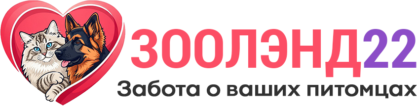
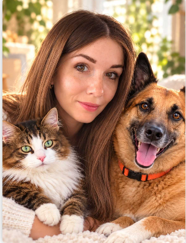
Меня зовут Екатерина, мне 30 лет, я — дипломированный специалист с высшим ветеринарным образованием.
Ваш питомец будет находиться под присмотром не просто любителя животных, а дипломированного специалиста. Мое ветеринарное образование — это ваша уверенность в том, что я смогу грамотно оценить самочувствие питомца, заметить отклонения в поведении или здоровье.
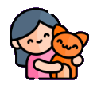
За годы практики я работала с самыми разными породами, возрастами и характерами. Этот опыт позволяет мне быстро устанавливать контакт с животным и создавать для него комфортную и дружелюбную атмосферу.
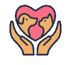
Я прекрасно понимаю, что у каждого животного свой уникальный характер, привычки и распорядок дня. Поэтому я подробно расспрошу вас обо всех нюансах: от режима питания и прогулок до любимых игрушек.
Я придерживаюсь всех рекомендаций и договоренностей. Безопасность на прогулках, чистота в доме и постоянное внимание к эмоциональному состоянию вашего питомца — мои главные приоритеты.
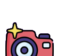
Я знаю, как тяжело оставлять своего любимца и как важно быть в курсе его состояния. Чтобы вы не волновались, я буду регулярно присылать вам фото и короткие видео из жизни вашего питомца: как он гуляет, играет, ест или просто отдыхает.
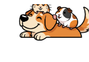
Кошки — 500 р/день. Собаки — по договоренности в зависимости от породы, возраста.
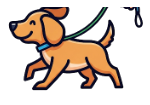
Профессиональный выгул собак с учетом индивидуальных потребностей вашего питомца, его характера и расписания.
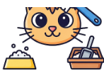
Полный спектр услуг по уходу за кошками у вас дома: кормление, замена воды, поддержание чистоты лотка.
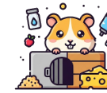
Забота о ваших маленьких питомцах: кормление, поддержание чистоты и необходимое внимание.
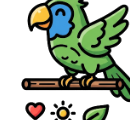
Уход за пернатыми друзьями: кормление, смена воды, поддержание чистоты клетки.
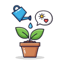
Полив, опрыскивание и необходимые процедуры для ваших домашних растений.
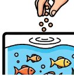
Включает кормление и контроль состояния воды.
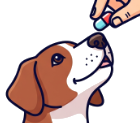
Для питомцев, требующих особого ухода: соблюдение графика и дозировки по вашим рекомендациям.
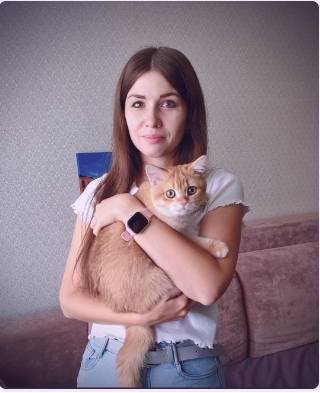
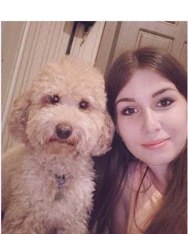
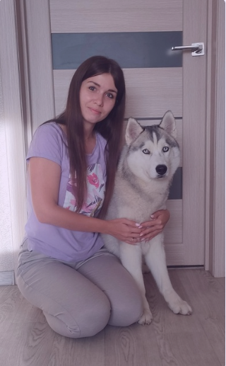
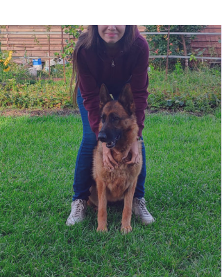
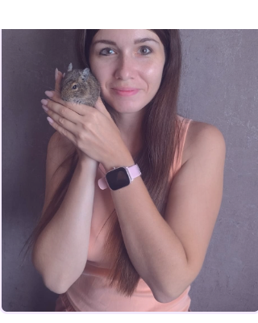
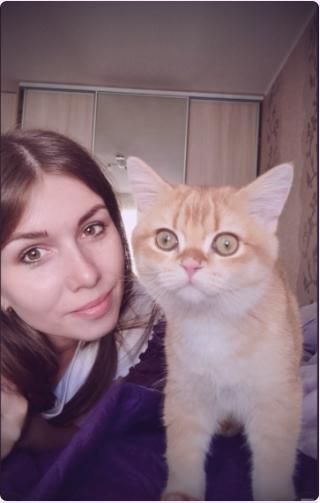
Дважды оставляли котиков под присмотром. Ежедневный фотоотчет — и видно, что котики довольны, что самое главное. Всё чистенько.
Екатерина сразу внушила доверие. Остались очень довольны. Очень вежливая, спокойная девушка. Волновалась, но всё прошло замечательно.
Прекрасная, добрая девушка. У нас пугливая дворняга, к которой сложно найти подход, и три кота. Екатерина наладила связь со всеми животными очень быстро.
Расскажите о питомце и нужной услуге — я отвечу вам лично.
Отправить заявку ↗